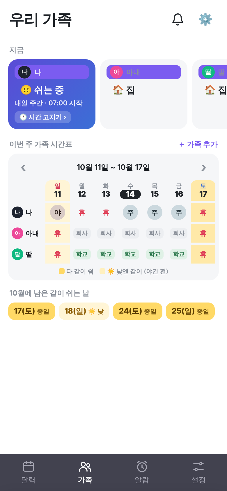
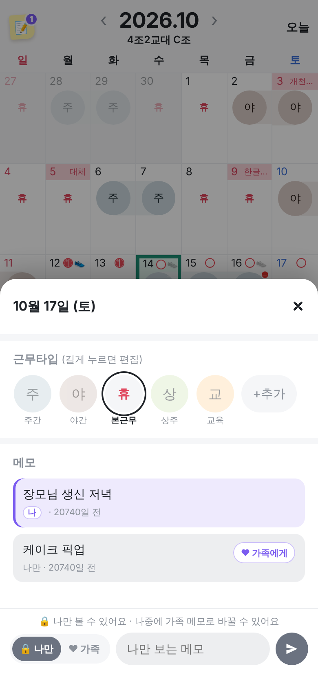
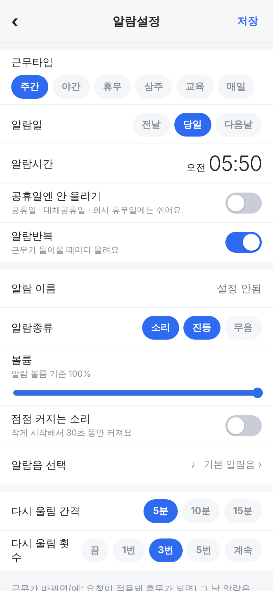
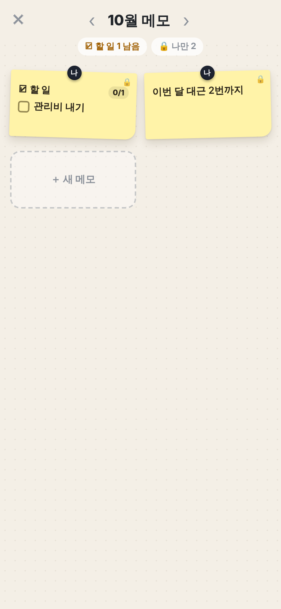
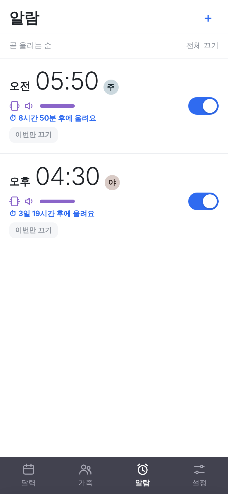
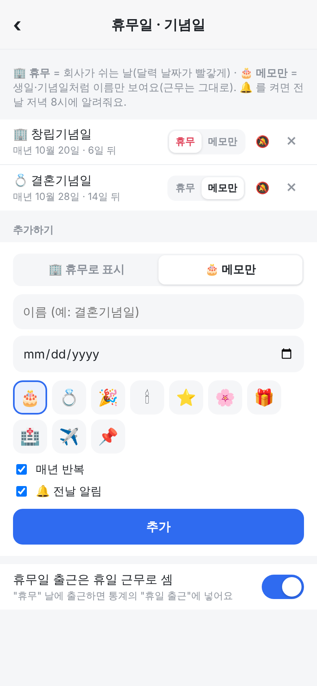

가족 탭 "지금" 카드: 보라 바탕에 연보라 글씨라 "아내 · 딸"이 거의 안 보여요

휴무 날인데 "휴" 아래에 "본근무"라고 나와요 (원래 근무라는 뜻)

알람 설정 맨 아래 "다시 울림 횟 / 수"

포스트잇마다 "나" · 메모마다 "나" · 가족 카드 "나 나" → 가족 연결 전엔 숨기기

알람마다 버튼이 붙어 있어요 → 하루 안에 울릴 알람에만 보이기

알람: 소리·볼륨·알람음·다시 울림은 한 줄로 접기 / 기념일: "＋ 추가" 누를 때만 입력칸 펼치기
